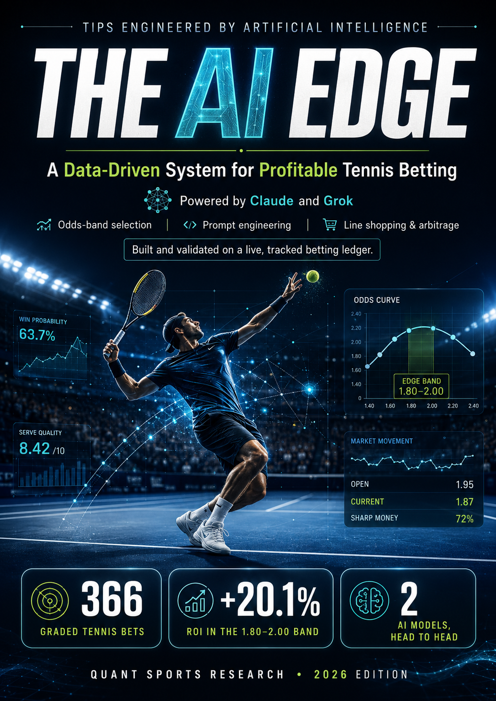

366
graded tennis bets
Tracked and reviewed across multiple surfaces and levels.
A practical, data-driven tennis analysis system for using Claude and Grok to estimate fair probability, compare it with the market, size risk and review every decision.
Instant PDF access · Read on any device · Educational use only

01 · The system
Move from a match opinion to a documented decision with the same process every time.
Estimate true win probability with Claude and Grok.
Convert odds to implied probability and compare.
Focus on the core band where edges appear.
Require agreement or a clear reason for divergence.
Use disciplined units and fractional Kelly thinking.
Track results, review decisions and refine.
02 · The evidence
One historical sample. Real cases. No guarantees.
Tracked and reviewed across multiple surfaces and levels.
Where the most consistent process observations appeared.
Higher variance and lower process reliability in the sample.
These are observations from one tracked sample using this process. Past performance does not predict future results, and your results will differ.
03 · The ebook
Ready-to-use prompts and decision rules built around a complete research workflow.
THE AI EDGE · WORKFLOW
Start wide, then narrow the slate before spending time on individual matches.
PROMPT OUTPUT
A ranked shortlist, skip list, key uncertainty and the next research question for each match.
“The goal is not more picks. It is fewer, better-documented decisions.”
04 · Fit & responsibility
This ebook is for education and disciplined research only. Bet only what you can afford to lose. Set limits, take breaks and stay in control.
You must be of legal betting age and betting must be lawful where you live.
The complete PDF guide